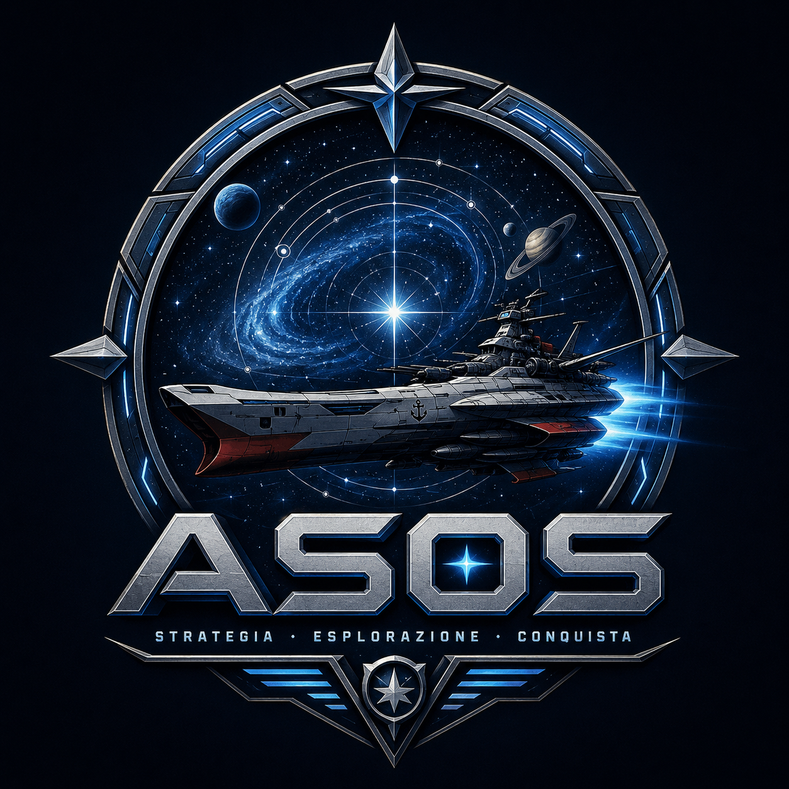

ASOS
Un gioco strategico spaziale solitario con flotte, esplorazione, fazioni in guerra, navi eroiche e campagne dinamiche generate con il supporto di un'app.
Immagina...
Immagina se la Corazzata Spaziale Yamato guidasse la flotta dell'EDF verso un incontro inatteso con una flotta di colonizzazione della UN Spacy.
Immagina le navi di Zeon affrontare in battaglia le armate di Garmillas, mentre gli Invid osservano dalle profondità dello spazio e Vega trama nell'ombra preparando la prossima invasione.
ASOS nasce da questa idea: prendere il fascino della fantascienza anime classica e trasformarlo in una grande campagna spaziale da vivere sul tavolo, settore dopo settore, battaglia dopo battaglia.
Cos'è ASOS?
ASOS è un progetto di gioco strategico spaziale pensato per unire il fascino della fantascienza anime classica con una struttura da campagna solitaria.
Il giocatore controlla una fazione, esplora una mappa galattica, costruisce basi, gestisce risorse, navi eroiche, ufficiali e flotte, mentre le altre potenze della galassia si espandono e reagiscono attraverso un sistema automatizzato.
Non è un videogioco: l'app serve a gestire la campagna, le fazioni, le flotte e gli eventi, ma il cuore dell'esperienza resta fisico, narrativo e tattico.
Il cuore del gioco
🚀 Navi Eroiche
Le grandi protagoniste della campagna: unità uniche con danni, ufficiali, progressione e un ruolo decisivo negli scontri.
🌌 Campagna Galattica
Una mappa spaziale da esplorare settore dopo settore, con colonie, basi, flotte nemiche e territori contesi.
⚔️ Fazioni in Guerra
Ogni fazione ha relazioni, obiettivi e flotte proprie. La galassia cambia anche quando il giocatore non agisce.
Una space opera emergente
In ASOS non esiste una storia prestabilita. Ogni campagna genera nuove alleanze, nuove guerre, nuove rivalità e nuovi eroi.
Una nave eroica può diventare il simbolo della resistenza. Una colonia dimenticata può scatenare una guerra. Due fazioni rivali possono incontrarsi nello stesso settore e trasformare una semplice esplorazione in una battaglia decisiva.
Il risultato è una campagna spaziale che cresce partita dopo partita, con eventi, relazioni diplomatiche, avanzamenti, perdite e colpi di scena generati dal sistema.
Cosa troverai
- Campagne spaziali dinamiche e rigiocabili.
- Fazioni giocabili e fazioni nemiche automatizzate.
- Navi eroiche con danni, ufficiali e progressione.
- Line unit, flotte, basi, esplorazione e conquista di settori.
- Eventi, relazioni diplomatiche e incontri tra flotte.
- Turni delle fazioni nemiche gestiti dal sistema.
- Supporto digitale tramite app di gestione della campagna.
- Possibilità di usare segnalini, standee, miniature o modelli 3D stampabili.
Nota importante
ASOS è un progetto amatoriale e non commerciale realizzato da appassionati di fantascienza anime. Tutti i marchi, i nomi delle serie e dei personaggi citati appartengono ai rispettivi proprietari. Nessuna violazione di copyright è intesa e il materiale viene utilizzato esclusivamente come omaggio alle opere originali.
Materiali del progetto
📘 Regolamento
Le regole della campagna, della gestione fazione, degli scontri spaziali, delle relazioni e della progressione.
💻 App di Supporto
Uno strumento digitale per gestire mappa, fazioni, flotte, eventi, ufficiali, danni e avanzamento della campagna.
🛰️ Miniature
Il gioco è pensato per poter usare segnalini, standee o modelli 3D stampabili delle navi.
🚀 Vai al repository GitHub
Stato del progetto
ASOS è attualmente in sviluppo attivo. Il regolamento, l'app di supporto e la struttura delle campagne sono in fase di espansione, revisione e test.
L'app è già in fase di prova e viene usata per verificare il funzionamento della campagna, delle fazioni, delle flotte nemiche e degli eventi. Parallelamente, il regolamento viene testato e rifinito per rendere il sistema più fluido, chiaro e giocabile.
L'obiettivo è costruire un sistema solitario modulare, capace di generare campagne spaziali sempre diverse senza trasformarsi in un videogioco: l'app assiste il giocatore, ma il cuore resta sul tavolo.